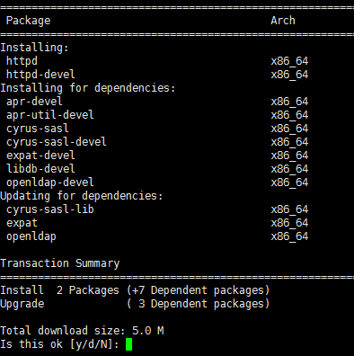

购买完服务器，就要开始建站了，安装Wordpress前
我们需要先配置AMP环境
AMP——Apache+MariaDB+PHP
目录
①配置Apache
②配置MariaDB
③配置PHP
①配置Apache
Apache —— http服务器
首先，启动Xshell并连接到服务器控制台
输入yum install httpd httpd-devel
安装Apache 与其扩展包

此时后台便会列出将要安装的软件及其依赖包，输入y安装
如果看到这个，就说明安装成功了。
输入systemctl start httpd
启动Apache服务
此时在浏览器输入我们的公网IP
便可以看到Apache的Test网站了
最后，输入systemctl enable httpd
将Apache服务设置为开机启动
至此，Apache配置成功
②配置MariaDB
MariaDB —— 数据库服务器
输入yum install mariadb mariadb-server
进行安装
安装流程和上面没什么区别
安装完成后，分别输入
systemctl start mariadb —— 启动服务
systemctl enable mariadb —— 开机自启
输入mysql -u root -p
password在刚安装时是没有的 直接回车

如果看到这个，便说明安装成功了
PS:对于为什么是使用mysql命令感兴趣的同学
可以去百度下MySQL和MariaDB的关系
然后输入
update mysql.user set password=password(‘新密码’) where User=”root” and Host=”localhost”;
（注意最后有一个；）
设置数据库root账号的密码
然后输入 flush privileges;
使更改立即生效
最后输入exit; 退出数据库
重新使用mysql -u root -p
password填上你输入的密码，如果登陆成功，那么密码便更改成功了。
至此，MariaDB配置完成
③配置PHP
PHP —— 一门后台服务器语言
输入yum install php php-devel
进行安装
安装成功后，输入systemctl restart httpd
重启Apache服务
使用cd /var/www/html
移动到Apache默认网页目录
然后使用vi index.php
创建一个php文件
vim说明：
i —— insert 进入编辑模式
esc —— 返回预览模式
:wq —— 保存并退出
进入编辑模式后输入
然后esc :wq 保存这个php文件
然后打开浏览器，输入http://你的公网IP/index.php

看到这个就说明PHP配置成功了
输入yum install php-mysql
安装PHP的MySQL扩展组件
至此，PHP配置完成
用户名
访客1
评论内容
访客2
评论内容
访客3
评论内容